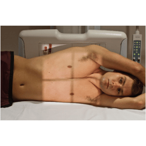
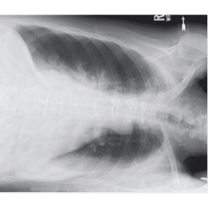

TÓRAX- DECÚBITO LATERAL / método DE HJELM-LAURELL
Paciente
Em D.L.D / D.L.E, conforme solicitação médica. Em AP, sobre uma prancha (material radio-transparente) PMS transversal à LCE, braços elevados, pernas em semi-flexão.
Chassis / Filme
30×40 ou 35×43 longitudinal (em relação a estrutura), posicionado em relação ao ombro.
Raio central
⊥ na horizontal, orientado para o centro do hemitórax de interesse.
DFF
1,80 m – com bucky.


Observação: Em apnéia após inspiração profunda.